PCR Reagents
Problem
Reagent selection accounts for about 36.1% of experimental failure, and experimental success is a key component of preclinical drug discovery. Delays in the preclinical drug discovery phases only impede the speed at which life-saving drugs can be developed and delivered to patients. BenchSci’s mission is to bring new drugs to patients faster by 50%. PCR Reagents are no exception to the challenges of reagent selection. Specifically, the main challenges identified with PCR reagents selected include:
+ more context
- hide context
You might be wondering - what even is PCR? Polymerase chain reaction (PCR) is a fast and inexpensive technique used to copy small segments of DNA. Because significant amounts of a sample of DNA are necessary for molecular and genetic analyses, studies of isolated pieces of DNA are nearly impossible without PCR amplification. If you’re looking for more information, here is a really helpful video that explains the basics of PCR.
BenchSci is in a great position to help with these challenges because we specialize in using machine learning to comb through millions of pieces of published literature to extract out the reagents and experimental context, so that scientists can come onto the platform, narrow down the data to their relevant experimental context, and see exactly which reagents were used, supported by published data.
Solution
Adding PCR Reagents to the platform allows scientists to easily find housekeeping genes, primers, or probes they would have otherwise manually searched for in the published literature.
Prioritize the data scientists are looking for
When scientists enter the term “housekeeping gene” into the search bar, a summary of housekeeping genes detected from the literature is displayed and automatically expanded on the results page. The summary prioritizes the genes used in the highest number of published figures.

Provide flexibility in how data can be accessed
Not all scientists will type in “housekeeping gene” into the search bar. Housekeeping gene data can be accessed through the summary, or via the filter where scientists can narrow down their results for other specifications of interest.

Allow scientists to leverage data of different levels of detail
Products that have been identified via their catalog number (highest detail), are differentiated from detected sequences and unknown PCR products (lowest detail).
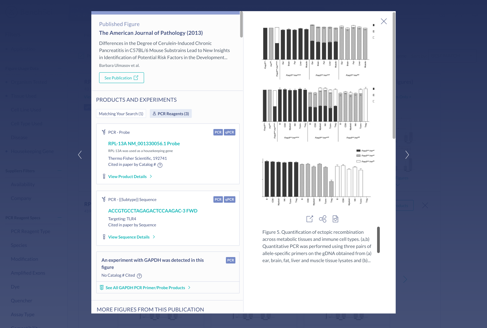Create a seamless primer selection experience
Suggestions for primer pairs are provided to scientists supported by experimental evidence. Scientists can view figures where the two primers were used together, as primers cannot be used alone, and this information is not commonly provided by vendors.

Surface the most important information for decision making
The most important specifications are included in the scientist’s search results. With this information, scientists can determine whether they wish to view the products in more detail.
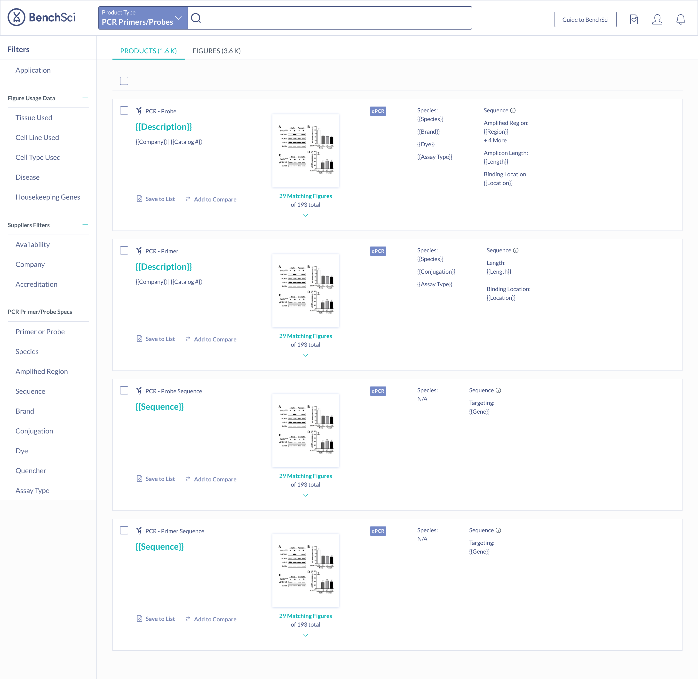My role
I was the sole product designer working alongside a Product Manager and coordinating with several members of other teams: Science, Data Pipeline, Research & Development, and Web Applications, to ensure the designs were supported by the data and functionality in the application.
Tools

Approach
Leverage insights from scientists to understand what is important to them
We had the opportunity to interview 9 industry scientists to understand their challenges with PCR - it was really important that we use the interviews wisely. These interviews were used to narrow the focus of PCR, but also dig into the information that was important to scientists in both of the above mentioned factors: making the information intuitive to find, and ensuring data comprehensiveness.
Begin collaboration early and continuing it throughout the process
This was key to ensuring we could meet scientists’ needs two-fold. While it was important that the data was presented in an easily digestible way, it was equally as important that the data be relevant to scientists. I met regularly with a representative from the Research & Development and Science teams, to ensure the data we were mining and providing would support the designs, and vice versa. I also ran several design reviews to ensure alignment across teams.Both of these factors: making the information intuitive to find and ensuring data comprehensiveness, drove the information we were looking to gather from scientists in the discovery phase. I also ran several design reviews to ensure alignment across teams.
Phase 1: Define
What are scientists doing currently?
In order to determine where BenchSci could possibly help, we needed to understand how a scientist typically runs a PCR experiment. Based on the insights from 9 interviews with industry scientists, I created the following user journey, highlighting the workflow, pain points, and opportunities:

What are the biggest challenges scientists face with PCR?
Based on the insights from 9 interviews with industry scientists, we identified the following three major challenges:
- Selecting new housekeeping (control) genes to use in a qPCR experiment when switching experimental context (i.e. conducting an experiment in a different tissue or cell type)
- Identifying qPCR primer or probe products, or sequences, that have been used in the published literature for a gene, and in a particular experimental context
- Selecting primers for conventional PCR applications
What are others doing to solve these problems?
I took a look at what other competitors in the space were doing with PCR to understand where BenchSci could differentiate its solution. The competitive analysis I conducted investigated the following three vendors:
The full competitive analysis can be found here.
Phase 2: Ideate
Information Architecture
I brainstormed how the various data we were capturing would fit into the current platform. One aspect I considered was how the multiple PCR reagents would fit into the current product type selection, and how product subtypes would be organized.
Housekeeping Genes
Since finding a suitable housekeeping gene to use was the most cited challenge among scientists, I brainstormed several different solutions to address this problem:
- Collapse results by housekeeping gene 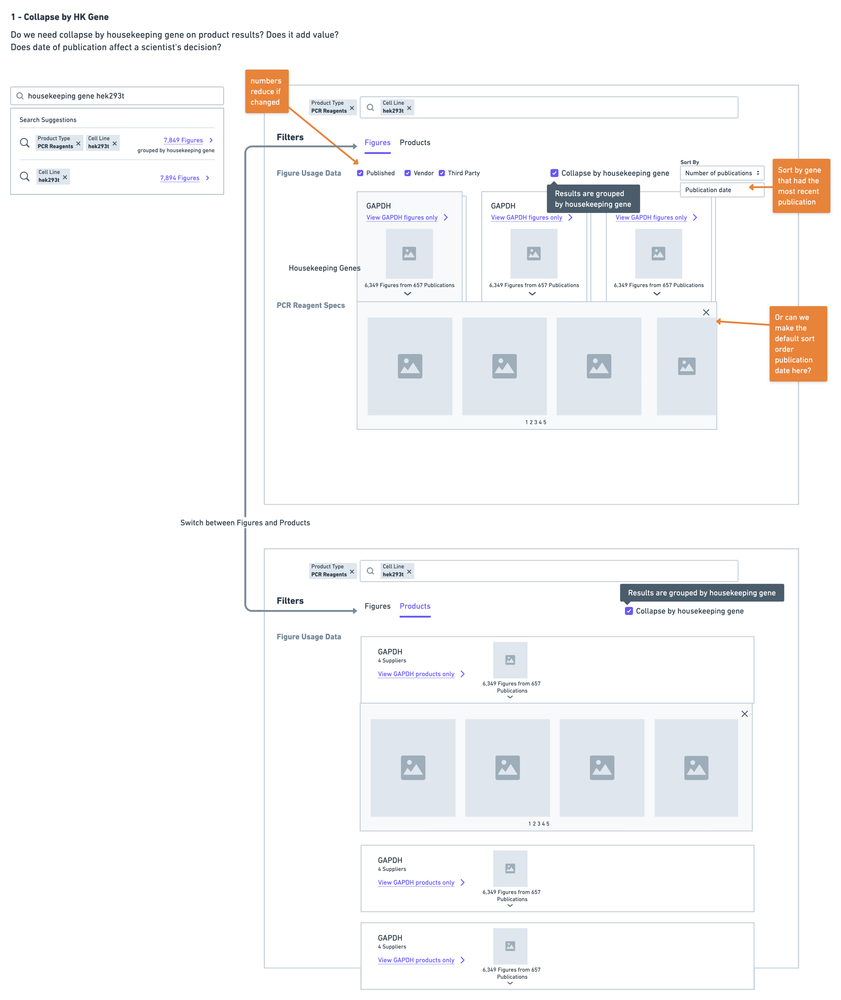
- Display a summary of housekeeping genes at the top of results 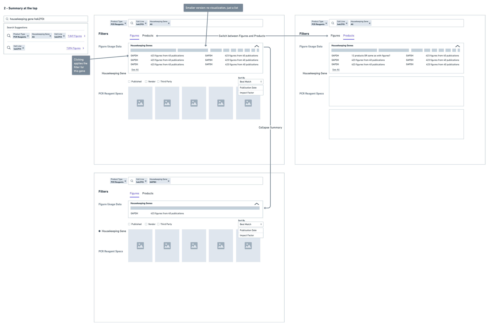
- Consolidate all housekeeping gene data in a separate page 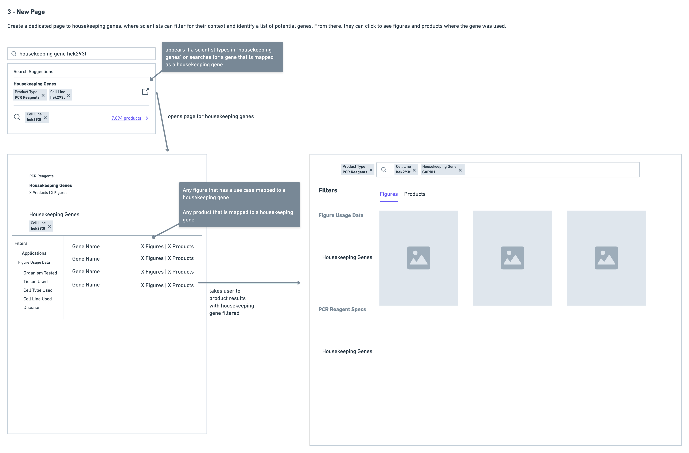
Primer Pairs
Since primers must be used in pairs, it was important to be able to link scientists to potential primer pairs. I experimented with using tags to indicate this, as well as displaying the pairs together:
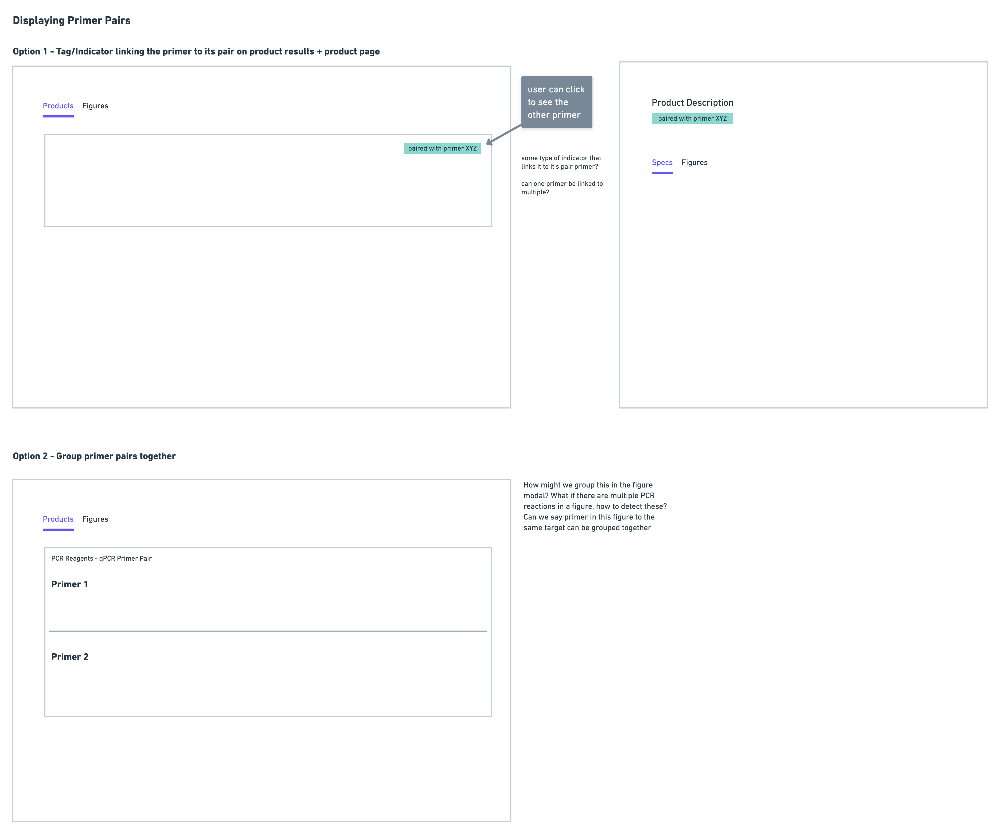Phase 3: Prototype and Test
I created a prototype and task walkthrough to test with 10 scientists - many of whom were initially interviewed during the discovery phase. I tested over a period of two weeks, and iterated on the prototype as I observed challenges users had.
Housekeeping Gene Solution: Narrowing Down a Solution
Very quickly on in the testing I ruled out the version with the separate page - the reason for this being that it was immediately clear scientists were having difficulty navigating. They often found themselves wanting to return back to the page with housekeeping gene data after reviewing some results for a particular gene. This resulted in a lot of back and forth navigation that was much more cumbersome in comparison to the summary and collapsed solution options.
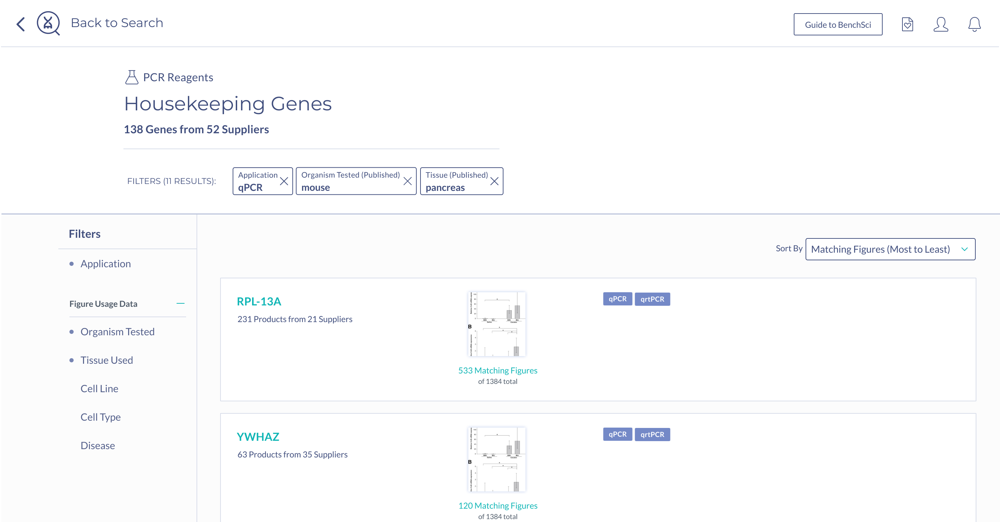Scientists were almost equally as successful with the collapse solution as they were with the summary - the challenge with this solution was that scientists were having trouble finding the control to toggle the collapsed view when this was not automatically done for them. This would have been a UI challenge we could tackle, except for the fact that the collapse solution on product results could not support a specific use case that was mentioned by scientists during testing - showing housekeeping genes used with a particular gene target.
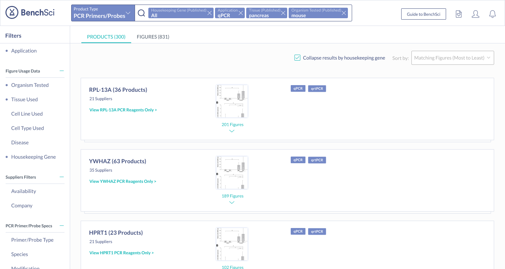Scientists found the summary solution to be the most easily digestible, with many stating that it was very easy to see the top housekeeping genes for their search context immediately. Scientists also mentioned they were most likely to turn to figures to find housekeeping gene data - hence having the summary on figure results was very intuitive. Because of this, the summary solution also supported the special use case of showing housekeeping genes used with a particular target, ultimately sealing the deal on this solution.
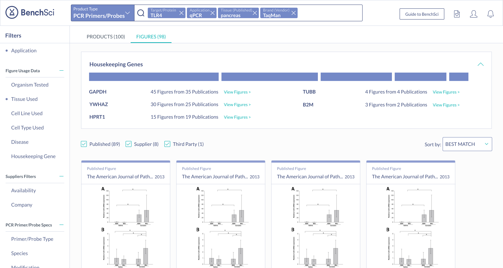Primer Pairs
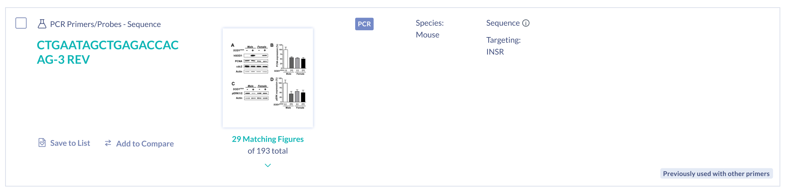After seeing scientists interact with the prototype, I noticed that the primer information was most important to be provided on the actual product details of the primer, rather than in the product results. This is because, at this point in the workflow, a scientist is still considering whether or not a primer could be suitable, by reviewing multiple primers in their results. It is only until they decide to investigate more into a primer by clicking into the details page does displaying primer pair information become relevant.
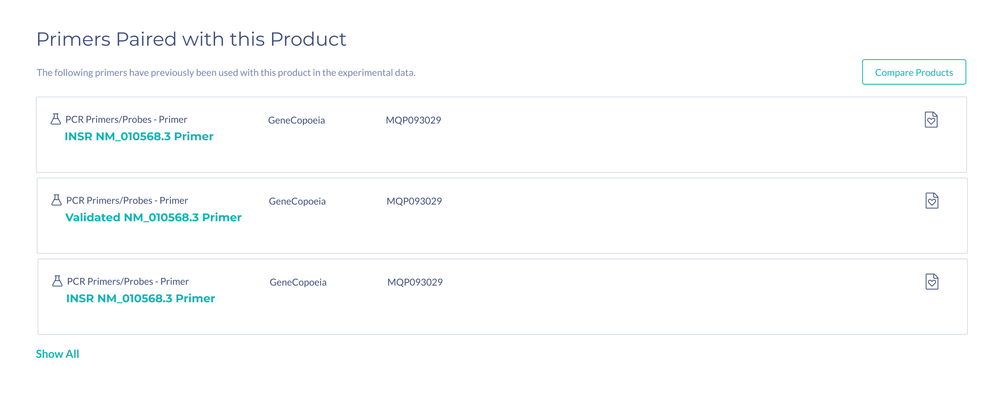In the prototype, the information on primer pairs was very minimal. During testing, scientists mentioned that in addition to seeing the number of figures two primers were used together in, they would need to see additional information such as species, and binding location, in order to assess if that primer is suitable.
Learnings and Improvements
Break up testing into waves
One of the things that was challenging with bundling all the tests together into a two week period is that it left little time for iteration in between tests. In the future, I would like to test more in waves and allow for several rounds of iteration versus trying to make changes so quickly in between tests.
Build a shared language
Because this project relied on multiple components coming together: designs, data mining and data mapping, I was constantly collaborating with the Research & Development, Science and Web Applications teams. One of the recurring themes in our discussions together was the importance of having a shared language when referring to the data. My understanding of the data was from the perspective of the user, and what is displayed on the platform, however, that data is collected and ultimately transformed into what is being displayed on the interface. Therefore my definition of a use case is different from what other teams understand. Being able to refer to a particular term without having to clarify each time what something means would have helped a lot of conversations go more smoothly.